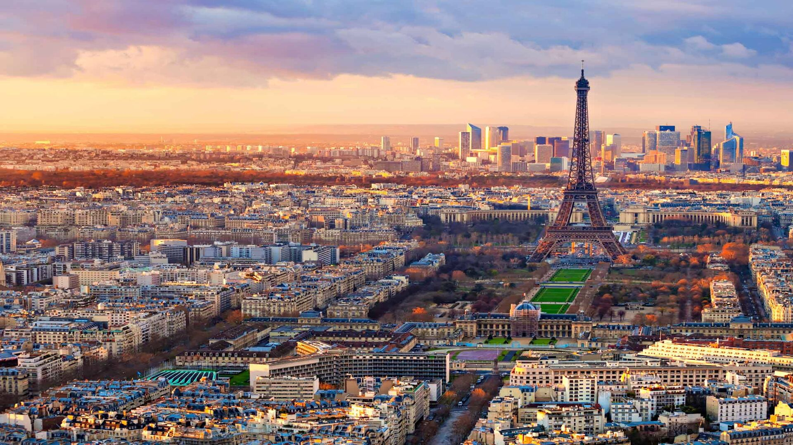
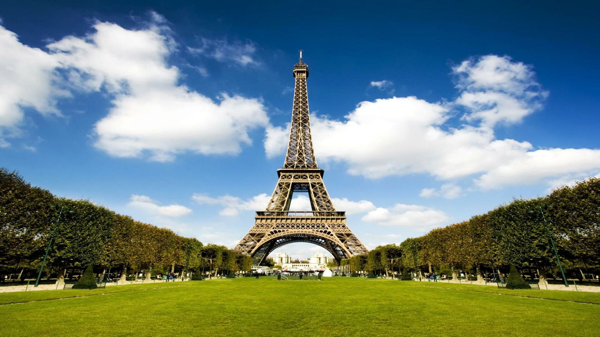
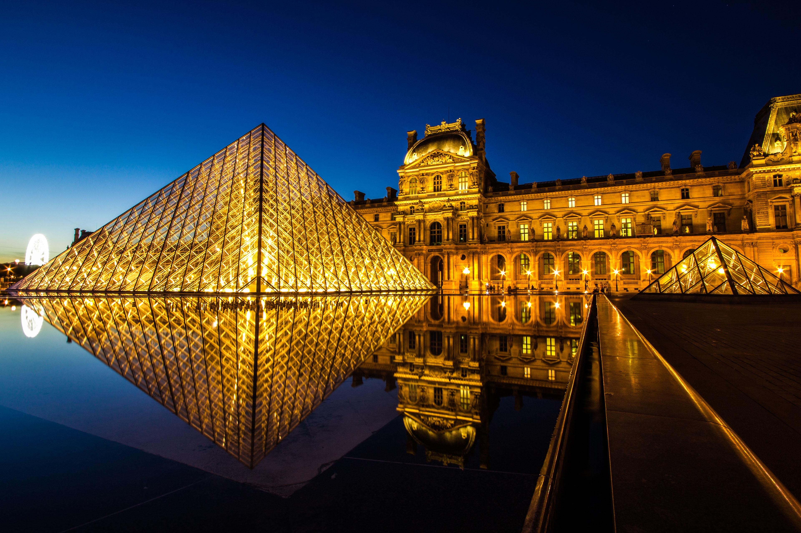
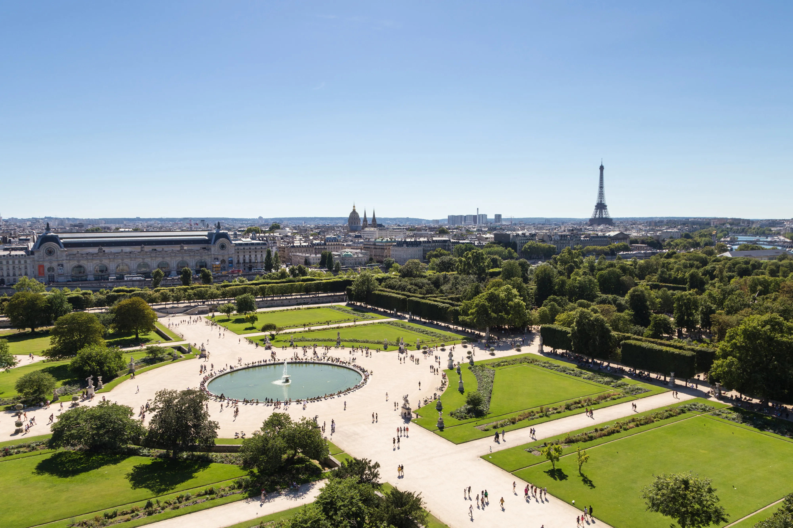

Selamat datang di Paris, kota cinta dan kota impian!
Paris adalah salah satu destinasi wisata terpopuler di dunia, dengan pesona dan keindahan yang tak ada duanya.
Di sini, Anda bisa menikmati berbagai atraksi menarik, mulai dari monumen bersejarah, museum-museum terkenal, taman-taman indah, hingga kafe-kafe romantis.
About Paris
Paris adalah ibu kota Prancis dan salah satu kota terbesar dan terpenting di Eropa. Paris adalah salah satu kota paling populer di dunia untuk wisatawan, dengan lebih dari 30 juta pengunjung setiap tahunnya. Salah satu ikon Paris yang paling terkenal adalah Menara Eiffel, yang dibangun untuk Pameran Dunia 1889 dan awalnya tidak dimaksudkan untuk menjadi struktur permanen. Paris juga memiliki museum seni terbesar di dunia, yaitu Louvre, yang menampilkan hampir 40.000 karya seni dari berbagai zaman dan peradaban. Paris adalah kota yang penuh dengan pesona, sejarah, budaya, dan kehidupan. Kota ini menawarkan sesuatu untuk setiap orang, baik itu seni, arsitektur, mode, kuliner, atau romansa. Paris adalah salah satu kota paling dikunjungi di dunia dan tidak pernah kehilangan daya tariknya bagi para wisatawan maupun penduduknya.

Paris adalah ibu kota Prancis dan salah satu kota terbesar dan terpenting di Eropa. Paris adalah salah satu kota paling populer di dunia untuk wisatawan, dengan lebih dari 30 juta pengunjung setiap tahunnya. Salah satu ikon Paris yang paling terkenal adalah Menara Eiffel, yang dibangun untuk Pameran Dunia 1889 dan awalnya tidak dimaksudkan untuk menjadi struktur permanen. Paris juga memiliki museum seni terbesar di dunia, yaitu Louvre, yang menampilkan hampir 40.000 karya seni dari berbagai zaman dan peradaban. Paris adalah kota yang penuh dengan pesona, sejarah, budaya, dan kehidupan. Kota ini menawarkan sesuatu untuk setiap orang, baik itu seni, arsitektur, mode, kuliner, atau romansa. Paris adalah salah satu kota paling dikunjungi di dunia dan tidak pernah kehilangan daya tariknya bagi para wisatawan maupun penduduknya.
Menara Eiffel

tempat ini adalah salah satu simbol kota Paris yang paling terkenal dan populer di dunia. Menara Eiffel memiliki ketinggian 324 meter dan terdiri dari tiga lantai yang dapat dikunjungi oleh pengunjung. Dari lantai atas, pengunjung dapat menikmati pemandangan kota Paris yang spektakuler dari ketinggian. Menara Eiffel juga memiliki lampu-lampu yang berkedip setiap malam dan membuatnya tampak lebih indah dan romantis. Menara Eiffel adalah tempat yang wajib dikunjungi jika Anda ingin merasakan suasana khas Paris.
Louvre Museum

tempat ini adalah museum seni terbesar dan terkenal di dunia. Louvre Museum memiliki koleksi lebih dari 380.000 karya seni dan artefak bersejarah dari berbagai peradaban dan zaman. Di sini, pengunjung dapat melihat karya-karya terkenal seperti Mona Lisa karya Leonardo da Vinci, Venus de Milo karya Alexandros dari Antiokhia, dan Patung Liberty karya Frédéric Auguste Bartholdi. Louvre Museum juga memiliki arsitektur yang menarik dengan piramida kaca yang menjadi ikonnya. Louvre Museum adalah tempat yang wajib dikunjungi jika Anda ingin mengagumi keindahan dan kekayaan seni dan budaya dunia.
Jardin des Tuileries

tempat ini adalah taman publik yang indah dan nyaman di tengah kota Paris. Jardin des Tuileries berada di antara Louvre Museum dan Place de la Concorde dan memiliki berbagai patung dan kolam air mancur yang menambah kecantikannya. Di sini, pengunjung dapat bersantai, berjalan-jalan, bersepeda, atau bermain perahu di kolam. Jardin des Tuileries juga memiliki beberapa kafe dan restoran yang menyajikan makanan dan minuman lezat. Jardin des Tuileries adalah tempat yang wajib dikunjungi jika Anda ingin menikmati suasana alam yang asri dan tenang di Paris.
Champs Elysées
tempat ini adalah jalan utama di Paris yang dipenuhi dengan toko-toko mewah, restoran, dan kafe. Champs-Elysées memiliki panjang sekitar 2 kilometer dan menghubungkan Place de la Concorde dan Arc de Triomphe. Di sini, pengunjung dapat berbelanja, makan, atau sekadar menikmati pemandangan kota yang ramai dan hidup. Champs-Elysées juga menjadi tempat berlangsungnya berbagai acara besar seperti parade militer pada Hari Bastille, pesta kembang api pada Malam Tahun Baru, dan finish Tour de France. Champs-Elysées adalah tempat yang wajib dikunjungi jika Anda ingin merasakan suasana kota Paris yang modern dan glamor.